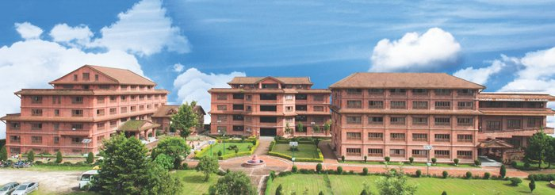

(An Undertaking of Bhaktapur Municipality)
KHWOPA ENGINEERING COLLEGE
Affiliated to Purbanchal University Estd.2001
(Dedicated To Country & People)

KhEC is Nepal's first community-based enginnering college,undertaken by Bhaktapur Municipality.It is centrally located at culturally rich city Bhaktapur.KhEC will
in every regard be the right destination for those who aspire to become proffessional engineers and architects at affordable fees.
With a distant vision of maintaining Bhaktapur's hard-won glory the college aims to produce highly skilled engineers/archtects that will have blends of both
indigenous and modern-day technologies.